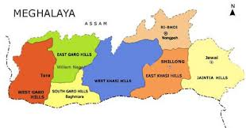

| Name: | Meghalaya |
|---|---|
| Capital: | Shillong |
| Language: | English, Khasi, Garo, Pnar |
| Chief Minister: | Conrad Sangma |
| Total Districts: | 12 |
| Population: | ~3.2 million (as per 2011 census) |
| Formation: | 21 January 1972 |
| Area: | 22,429 km² (22nd largest in India) |
| Borders: | Assam, Bangladesh |
| Coastline: | None (Landlocked State) |
Know more